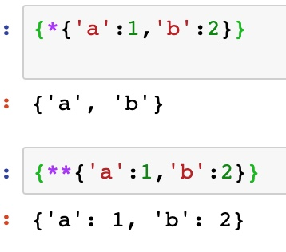

Positional • 가장 기본
Keyword
• 직접 arg이름을 붙여서 넘겨주는 것 (arg 순서를 생각하지 않아도 되는 장점)
def foods(first, second, third):
print(f"내가 좋아하는 음식은 순서대로 {first}, {second}, {third}이야")
foods(third="가츠동", first="라자냐", second="간장새우")
>> "내가 좋아하는 음식은 순서대로 라자냐, 간장새우, 가츠동이야"
Variadic Positional * • 몇 개 올지 모를 때, 그냥 막 넘기기만 하면 되는 방식
• tuple로 들어가줌
• 상식적으로, *이 나온 이후로 arg가 올 시, 이 애는 keyword 방식이 강제됨
def foods(name, *foods):
print(f"{name}는 {foods}를 좋아해")
foods("광은이", "라자냐", "간장새우", "가츠동")
>> "광은이는 ('라자냐', '간장새우', '가츠동')를 좋아해"
Variadic Keyword ** • 몇 개 올지 모를 때, 임의의 keyword까지 붙여서 넘겨주길 요구하는 방식
• dict로 들어감 (임의의 keyword가 key, 해당값이 value)
def foods(name, **foods):
print(f"{name}는 {foods}를 좋아해")
foods("광은이", first="라자냐", second="간장새우", third="가츠동")
>> "광은이는 {'first': '라자냐', 'second': '간장새우', 'third': '가츠동'}를 좋아해"
Default Argument
뭔가 주의사항이 많아서 별로 쓰고 싶진 않으나… 기억은 해두자
• default arg가 있으면 arg를 안넘겨도 됨 (당연하지만)
• 인자의 기본값을 무시하고 아규먼트를 넘겨줄 수 있음 💫
• 인자의 기본값은 함수가 정의되는 시점에 정해진다 ✨
• 인자의 기본값은 한번만 만들어진다 ⚡️
i = 0
def func(a = 0, b = i, c = []):
c.append('added')
print(f"a = {a}, b = {b}, c = {c}")
i = 100
func(5, 5)
func(5)
func(5)
* 를 통한 argument unpacking
def moon(a, b, c):
print(a,b,c)
>> moon(*[1,2,3])
{*[1,2,3],*[3,4,5]}
{1, 2, 3, 4, 5} 👏🏻

** 는 dictionary로 unpacking
{**{'a':1,'b':2},**{'c':3.'d':4}} 이거 왜 안되지